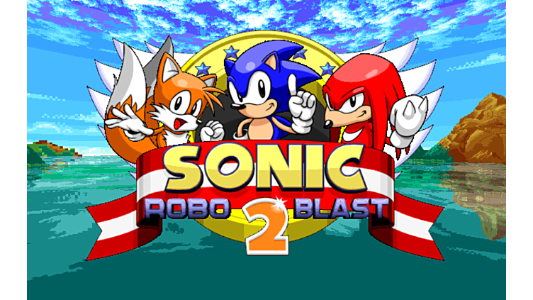
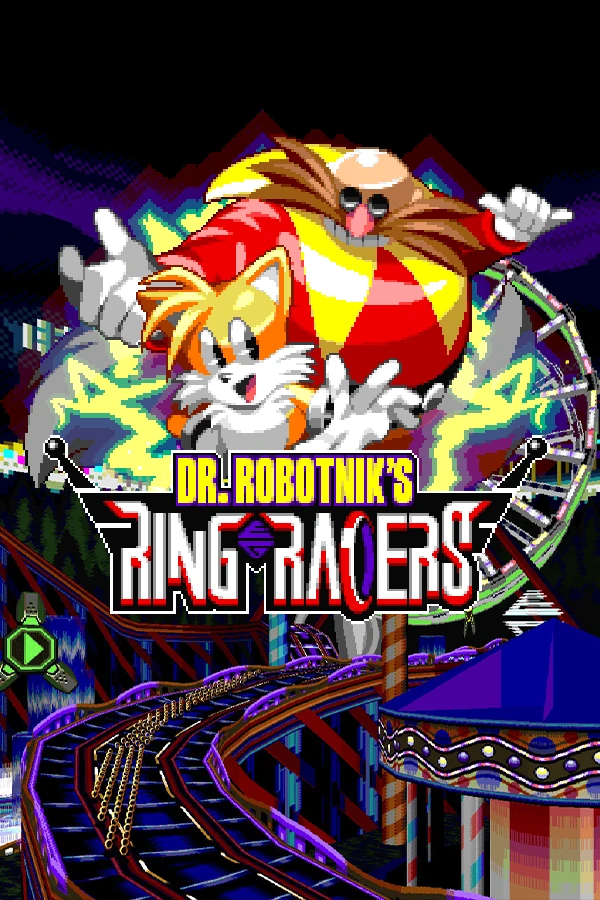

The Twenty-Seven Year Old Fangame
20/02/2025
I'm transgender, I'm autistic, and I was born in the early 90s. Naturally, this means I have formed a lifelong attachment to Sonic the Hedgehog.
It started with Sonic 2 on the Mega Drive, which I played basically all the time. My dad had written down the cheat codes for level select, debug and all emeralds in the back of the manual, and I spent tens if not hundreds of hours messing with the object placement mode. My first experience getting in the guts of a computer, even if it was in a relatively safe way.
I was lucky enough to get a Gamecube at launch in May 2002, with Sonic Adventure 2. You could probably really pinpoint that as the end for me. Sonic Adventure 2 was so cool. It still is cool, despite being (in the cold, modern light of day) really only about 1/5th good game and 4/5ths shite.
But it's a game that feels cohesive. It builds up a strange world through the action stages, the Chao garden, the multiplayer stages... it feels like a whole. It's unsurprising that it too sucked me in, as it did many many others.
I continued playing different Sonic games throughout my childhood and, still, into adulthood. One of my fave games of last year was Shadow Generations, for god's sake. It's the most uneven series I still stick with, but it's hard to quit Sonic.
Sometime in my teenage years, around when I was 12 or 13, I started digging into Sonic fangames. I played the demo of the very first version of the Retro Engine, which would eventually by used by its creator, Christian Whitehead (among others) to make Sonic Mania. I fooled around with romhacks a lot. I spent a lot of time browsing Sonic Retro and Sonic Cult (deep cut!), digging through all sorts of info about sonic betas, And also learning what the words 'hentai doujinshi' meant. Some of my first porn was Sonic art. Probably explains Why I'm Like This. That page is on the internat archive, if you're curious. Relive my sexual awakening with me. The warnings for Furry Bomb said to only download if I promised I wasn't a minor, which I dutifully ignored. Wonder if I can get a copy of one of these from Mandarake one day. #5 was my favourite.
ANYWAY, I DIGRESS. What were we talking about? Fangames, right? OK so yeah, Sonic has had a fantastic fangame scene basically from its inception, right to the present day. I look forward to SAGE every year, an event that started in humble sonic hack beginnings and is now a celebration of hacks, fangames and original indie titles inspired by Sonic. I usually tweet about some of the games I sample, so look out for that in June.
But when it comes to fangames, there's one that really stands out, above all others. It's older than most of them. It's definitely been in development longest.
It's Sonic Robo Blast 2.
{kind=link}
SRB2 is, flatly, bananas. It's a 3D Sonic game that predates Sonic Adventure. (Technically. SRB2 started off as a 2D fangame in early 1998, then moved to 3D engine in 1999. So it didn't beat Sonic Adventure to the 3D punch really, but it was damn close.) It's built on a fork of the Doom engine, with slopes and room-over-room (something that is still rare in modern doom source ports!) as well as more conventional platformer mechanics. It has its own interpretation of how Sonic should feel in 3D, heavily inspired by the physics and momentum-based structure of the 2D games. The cornerstones of how SRB2 feels to play have gone on to influence countless other 3D Sonic fangames.
I started playing it in the 'Final Demo' era, which despite the name was not in fact the final demo before its full release. In fact, SRB2 is still not finished. it's now at version 2.2, with 6/8 zones done. Which I guess sounds like it's taking forever, but it should be noted that SRB2 isn't just an ordinary singleplayer fangame. It's actually chock full of an insane amount of features. At current blush:
- Singleplayer campaign with 6 complete zones, one incomplete zone, and one final boss zone.
- 6 playable characters, each with unique movesets.
- 5 Bonus single-act zones.
- 8 singleplayer Special Stages - implemented as a full recreation of NiGHTS into Dreams (!)
- 7 multiplayer blue-sphere-esque Special Stages
- 4 NiGHTS bonus stages
- An entire Doom-inspired FPS multiplayer mode with CTF, and Deathmatch gamemodes, with 37 maps.
- 1 bonus level that utilises a special 'Mario Mode,' that emulates Mario-style gameplay.
- 1 special legacy zone that serves as a playable museum of the 'final demo' version of the game.
That's a lot of game for the low low price of free!
Playing this game on and off for years, it's amazing to see both how the game's grown, but also how it feels so similar to the game I played at 13 or whatever. I have no doubt since the 'final demo' that the physics have been tweaked and rewritten multiple times, but the coolest thing about SRB2 is playing it now, it feels how I remember, unlike, say, Sonic Adventure. The hazy, rose-tinted specs of youth make you forgive a lot of sins in games, so it's really neat that SRB2 manages to feel great while not betraying how you remember it being.
BUT THAT'S NOT ALL!
Because SRB2 is built on Doom, it itself is extremely moddable. And, like Sonic, the community around SRB2 has been extremely active since day 1. There's a veritable bonanza of custom maps and characters, with bespoke art and movesets and even brand new mechanics to support them. As a kid I dove deep into this, having fun with tens of weird different characters from all across the Sonic canon and beyond. Now I'm revisiting, I've only touched one (a fantastic Modern Sonic implementation) but god, what depth.
BUT THAT'S STILL NOT ALL!
SRB2 has itself spawned some fabulous total conversion mods, the most well-known of which is SRB2 Kart, and its sequel, DR. ROBOTNIK'S RING RACERS!
{kind=link}
That's right baby, I bamboozled you again! This entire blog post was here to advertise DR ROBOTNIK'S RING RACERS to you! Ring Racers is a highly technical kart racer, that (in my humble opinion) unseats Mario, the king of karts, with absolute ease. Over 230 tracks! 63 characters! 22 power ups! A Smash Bros style unlock wall (fantastic to see this mechanic outside of a Sakurai game!) Battle mode! Boss battles!?
Ring Racers really feels like it took the precedent set for exceeding expectation by SRB2, looked at it, and went "yeah, that's small fry. Here's how you actually do it."
And fuckin' fair play to 'em! I love Ring Racers, I think it's fantastic. Driving is a joy in it, the drifting is absolute perfection and the ring management mechanic is sublime. Basically you collect rings on the track, up to a maximum of 20. Getting hit loses rings, like in a regular Sonic game, but you can also use them one-by-one to get a momentary boost of speed.
Driving is momentum-based - it's hard to build speed, and the whole aim of the game is maintaining it. And that's pretty damn tricky! And with that in mind, maybe you hold on to your rings while you're ahead in case you scupper a corner and need to spend them to bring yourself back up to pace later!
This turns every race into a fine balancing act. It pushes you to learn the track layouts and learn them well, evaluating where you can use rings, when you're gonna get more, whether you should diverge from the main route to go down a side road and grab a powerful item. Each track has multiple routes through it, like a classic 2D Sonic level (and SRB2's levels too, of course). Some are faster, some are slower, some are only accessible with certain items. Every lap ends up different as a result as you experiment. It's joyous.
Then there's the trick system. The tutorial teaches you about it, and then the game proceeds not to use it for around 8 cups. But it's another element of this really elegant puzzle. Tricks can only be done on specific ramps and stage elements, and if performed correctly give a momentum boost in a specific direction. This can lead to new routes, to boost pads, to special secrets!
It's a game that is packed to the gills with stuff, and it's bloody lovely.
So yeah. Play Ring Racers. It's available on all PC platforms, with full controller support. The tutorial is famously long (around 40 minutes NO IT'S OK COME BACK) but it's worth persevering through, I promise. PLAY IT I LOVE IT!!